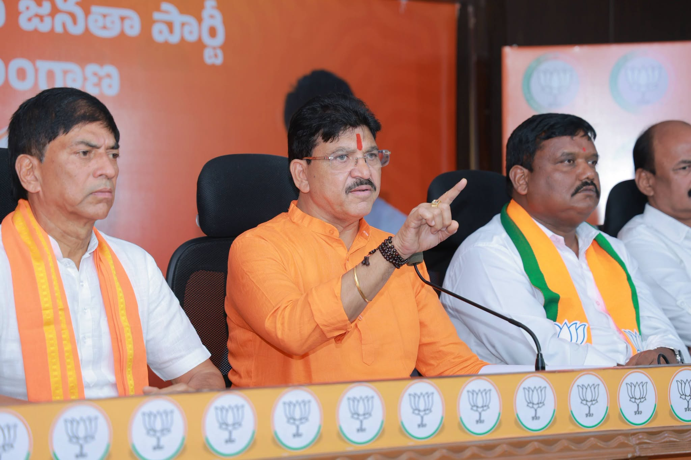

Paidi Rakesh Reddy (born 20 March 1967) is an Indian politician from Telangana who serves as the Member of the Legislative Assembly (MLA) for the Armur constituency. He won the 2023 elections by a landslide margin of 29,669 votes.
Before entering politics, he was a successful NRI entrepreneur. He is the founder of the Rakesh Reddy Foundation, dedicated to community welfare.
Read Full Biography →Born in Ankapur, Nizamabad district, Rakesh Reddy discontinued education after Class VIII and moved to UAE in 1987. In 1994 he returned to India and built a business empire, channelling resources into entrepreneurship and social service for the Armur community.


Shri Paidi Rakesh Reddy envisions a prosperous Armur — where infrastructure is world-class, water and sanitation reach every household, youth have opportunities to thrive, and farmers receive the support they deserve.
Moved to UAE; began as construction labourer, later became a driver.
Returned to India and established businesses in red sanders exports, real estate, and healthcare.
Joined the Bharatiya Janata Party (BJP) in the presence of national leader Tarun Chugh.
Won Armur MLA seat with a record margin of 29,669 votes.
Appointed as in-charge for Malkajgiri Lok Sabha constituency by the BJP.
Appointed as BJP Legislative Assembly Treasurer.
Paidi Rakesh Reddy scripted history in the 2023 Telangana elections by winning Armur with a record margin of 29,669 votes.
The Foundation continues delivering healthcare camps, road development support, and educational assistance to families in Armur–Nizamabad.
In January 2024, Shri Rakesh Reddy was entrusted with the role of in-charge for Malkajgiri Lok Sabha constituency.
Since taking office, Shri Rakesh Reddy has prioritised road development and water supply improvements across Armur.